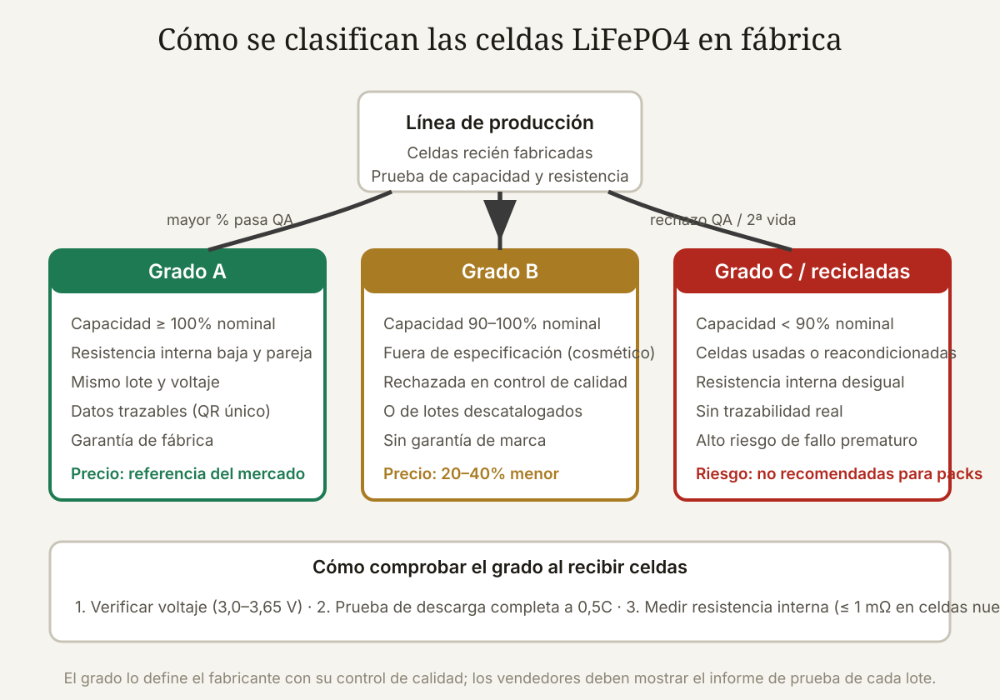

Qué cubre esta guía
- Por qué LiFePO4 y por qué importa el grado
- Qué significa grado A, B y C en la industria
- Marcas legítimas y sus patrones de marcado
- Cómo leer el marcado láser y el código de lote
- Pruebas al recibir: el protocolo completo
- Señales de alarma: reetiquetadas y recicladas
- Dónde comprar y qué preguntar
- Seguridad al armar el pack
- Conclusión
- Preguntas frecuentes
Por qué LiFePO4 y por qué importa el grado
El fosfato de hierro y litio (LiFePO4 o LFP) se ganó su lugar en los packs de autoconsumo, vehículos eléctricos y herramientas por tres cualidades: una química térmicamente estable que prácticamente no entra en fuga térmica, una vida útil de 3.000–6.000 ciclos y una curva de descarga plana que entrega potencia constante. En la comparativa LFP vs NMC se analizan sus números en detalle.
Pero la química no lo es todo: una celda LFP de mala calidad — con capacidad real inferior a la nominal, resistencia interna alta o defectos de fabricación — arruina el pack completo. En un pack en serie, la celda más débil limita la capacidad de todas las demás y, si se sobrecarga o sobredescarga, puede hincharse y destruir el BMS. Por eso, antes de comprar, el grado de la celda es más importante que la marca.
Qué significa grado A, B y C en la industria
El grado no es una certificación oficial: es la clasificación interna del fabricante al final de la línea de producción. Después de fabricar, cada celda pasa por pruebas de capacidad, resistencia interna, autodescarga y verificación cosmética. Según el resultado:
| Grado | Criterio típico del fabricante | Destino habitual |
|---|---|---|
| A | Capacidad ≥ 100 % nominal, resistencia interna dentro de especificación, cosmética perfecta | Venta oficial a fabricantes de packs y canales autorizados |
| B | Capacidad 90–100 %, defecto cosmético, o lote fuera de ventana de especificación | Liquidación a distribuidores (precio 20–40 % menor) |
| C | Capacidad < 90 %, resistencia alta, o celdas retiradas de packs usados | Reciclaje, almacenamiento estacionario de bajo requisito |
Dos aclaraciones importantes. Primero: el grado B no es basura — una celda B de capacidad 95 % puede funcionar años en una aplicación bien diseñada. El problema real aparece cuando se vende grado B (o peor, grado C reacondicionado) al precio de grado A, sin informarlo. Segundo: el grado lo define el fabricante con datos; un vendedor que dice "grado A" sin mostrar el informe de prueba de lote está haciendo una afirmación sin sustento.
Marcas legítimas y sus patrones de marcado
Las celdas LFP prismáticas del mercado vienen casi todas de fabricantes chinos, pero no todos los fabricantes son iguales. Las marcas con reputación en el sector de energía (las que los integradores serios usan en sus packs) incluyen:
- EVE Energy — muy popular en el mundo DIY; sus prismáticas de 100–314 Ah tienen un marcado láser limpio con el logo, la capacidad, el código de fecha y un código QR DataMatrix.
- CATL — el mayor fabricante mundial de baterías; suministra a Tesla, BMW y otros. Sus celdas de almacenamiento estacionario se consiguen en el canal de distribución.
- CALB — pionero en LFP para transporte; celdas robustas con marcado claro.
- Lishen, REPT Batto, Gotion, Hithium — fabricantes establecidos con presencia creciente en almacenamiento.
Lo que NO debes esperar: celdas "sin marca" con stickers genéricos, celdas con marcas desconocidas que imitan los colores de EVE o CATL, y ofertas de "grado A" con precios 50 % bajo el mercado. El marcado de una celda genuina es láser grabado en la carcasa de aluminio, no tinta ni sticker; la tinta se borra con un paño húmedo, y eso es exactamente lo que algunos vendedores hacen para reetiquetar.
Cómo leer el marcado láser y el código de lote
Una celda EVE prismática típica tiene grabado en su carcasa:
- Logo del fabricante y modelo (p. ej., LF100LA o LF280K).
- Capacidad nominal (Ah) y voltaje nominal (3,2 V).
- Código de fecha o de lote (p. ej., formato AA MM DD o código alfanumérico), que permite rastrear la producción.
- Código QR / DataMatrix con los datos del lote (algunas series lo incluyen).
Al recibir, fotografía el marcado y escanea el QR. En muchas series, el QR contiene el número de lote y la capacidad clasificada (por ejemplo, la clasificación "A1" o "A2" dentro de grado A según la capacidad real medida en fábrica). Un lote EVE típico se clasifica en subgrupos con capacidades reales como 105 Ah, 106 Ah, 107 Ah: comprar 4 celdas del mismo subgrupo (misma capacidad clasificada) reduce el desbalance inicial del pack.
Pruebas al recibir: el protocolo completo
Ningún marcado es infalible — el láser también se falsifica. La verificación real se hace con instrumentos al recibir:
- Inspección visual y dimensional: la carcasa de aluminio sin abolladuras, sin hinchazón, terminales sin marcas de soldadura previa (una celda "nueva" con marcas de pestañas de níquel es casi seguro de segunda vida).
- Voltaje en reposo: una LFP recién fabricada llega entre 3,20 y 3,30 V. Voltajes muy por debajo (3,0 V o menos) indican almacenamiento prolongado o autodescarga alta.
- Prueba de capacidad por descarga completa: carga la celda a 3,65 V (0,2C), reposa 1–2 horas, descarga a 0,5C hasta 2,5 V y mide los Ah entregados. Una celda de 100 Ah nominal debe entregar ≥ 100 Ah (grado A) o al menos 90–95 Ah (grado B informado). Esta prueba tarda ~3 horas por celda: hazla en todas antes de armar el pack.
- Resistencia interna: con un probador de IR (o calculada por caída de voltaje en corriente continua), una celda LFP prismática nueva de 100 Ah ronda 0,3–1,0 mΩ. Valores de 2 mΩ o más delatan celdas envejecidas. Las 4 (o N) celdas del pack deben tener IR parejas (variación < 10 %).
- Autodescarga: mide el voltaje, deja reposar 30 días y mide de nuevo; una caída mayor a 10–20 mV/mes en una celda nueva es señal de defecto interno.
- Prueba de hinchazón bajo carga: durante la descarga, la celda no debe deformarse ni calentarse más de lo normal (LFP trabaja bien hasta ~45 °C de carcasa).
Señales de alarma: reetiquetadas y recicladas
Los fraudes más comunes en el mercado de celdas LFP:
- Grado C vendido como B o A: celdas retiradas de packs de autos eléctricos (segunda vida), con capacidad real 70–90 %, vendidas como nuevas. Señales: marcas de soldadura en los terminales, rayones en la carcasa, stickers que cubren el marcado original, o "grado A+ sin marca".
- Capacidad inflada: celdas de 90 Ah vendidas como 100 Ah. Solo la prueba de descarga lo revela.
- Subgrupos mezclados: celdas del mismo modelo pero de lotes o clasificaciones distintas vendidas como "parejas"; el desbalance aparece en los primeros ciclos.
- Precios imposibles: una celda LFP de 100 Ah grado A genuina tiene un precio de mercado estable; ofertas 40–50 % inferiores son casi siempre grado B o C sin informar. El precio no es el problema: es la diferencia entre lo que pagas y lo que te entregan.
Dónde comprar y qué preguntar
Los canales ordenados de mejor a peor en términos de trazabilidad:
| Canal | Trazabilidad | Precio | Riesgo |
|---|---|---|---|
| Distribuidor autorizado de marca (EVE, CATL...) | Alta: informe de lote oficial | Referencia | Bajo |
| Integrador con banco de pruebas propio | Alta: publica los test de cada lote | +5–15 % | Bajo |
| Marketplace (AliExpress, Mercado Libre) | Variable: depende del vendedor | −10–30 % | Medio-alto |
| "Liquidaciones" y packs de segunda mano | Muy baja | −40 %+ | Alto |
Preguntas obligatorias al vendedor (y desconfía si no responde con datos):
- ¿Cuál es el informe de prueba del lote (test report) y la capacidad medida de las celdas que me enviarás?
- ¿Qué clasificación interna tienen (subgrupo de capacidad) y puedo recibir celdas del mismo subgrupo?
- ¿Qué voltaje de reposo tienen al despachar?
- ¿Cuál es la política ante celdas que no pasen mi prueba de capacidad al recibir?
Seguridad al armar el pack
Aun con celdas grado A verificadas, el pack se arma con reglas que no se negocian:
- Balanceo inicial: carga todas las celdas al mismo voltaje (3,45 V típico) y conecta el pack; el BMS debe balancear en los primeros ciclos.
- BMS adecuado: el BMS debe soportar la corriente máxima del pack (con margen de 1,25×) y tener balanceo activo o pasivo real; la guía de reparación de baterías y BMS explica cómo elegir y verificar la protección.
- Compresión de celdas prismáticas: los fabricantes especifican una fuerza de apriete (típicamente 300 kgf en packs de 100 Ah): un marco con placas laterales rígidas y espuma de compresión prolonga la vida de las celdas prismáticas y evita que se hinchen.
- Fusible y protección: fusible DC en el positivo, desconexión rápida, y cajas ventiladas pero sin acceso a objetos metálicos.
- Terminales: usa el torque especificado por el fabricante y arandelas de seguridad; un terminal flojo se calienta y puede fundir el aislante.
Conclusión
Comprar celdas LiFePO4 es comprar con datos o comprar a ciegas. El marcado láser, el código de lote y el informe de prueba del fabricante son la primera capa de verificación; la prueba de capacidad real, la resistencia interna y la inspección de terminales son la segunda, y la única que no se puede falsificar.
La decisión entre grado A y grado B es legítima si es informada: un pack de grado B bien seleccionado y probado puede ser un gran negocio para aplicaciones de bajo requisito. El fraude no está en que exista grado B, sino en que te lo vendan como grado A. Con el protocolo de este artículo — fotos del marcado, informe de lote, prueba de descarga al recibir — te aseguras de pagar exactamente por lo que recibes.
Preguntas frecuentes
¿Es seguro comprar celdas LiFePO4 grado B?
Sí, con dos condiciones: que el grado B esté declarado (y por tanto el precio sea coherente, 20–40 % menor) y que pruebes cada celda al recibir (capacidad, resistencia interna, voltaje). Las celdas B de 90–100 % de capacidad funcionan bien en aplicaciones donde la capacidad real se conoce y el pack se dimensiona con esa capacidad real, no la nominal. El riesgo no está en el grado B sino en que te lo vendan como A, o en que sea en realidad grado C/segunda vida sin informarlo.
¿Cómo pruebo la capacidad real de una celda LiFePO4 sin equipos caros?
Necesitas un cargador con límite de corriente (un cargador LFP de 12V con ajuste o un cargador de baterías RC), una carga resistiva o una lámpara/carga electrónica, un multímetro y un temporizador. El método: carga a 3,65V/0,2C, reposa, descarga a corriente constante (0,5C si puedes medirla con el multímetro en serie) hasta 2,5V, y registra amperios × horas. Una alternativa práctica de bajo coste: usar un medidor de batería tipo "coulomb counter" (RC watt meter) en serie durante la descarga. La precisión será menor que la de un banco de pruebas, pero suficiente para detectar una celda de 90 Ah vendida como 100 Ah.
¿Qué es el subgrupo de capacidad y por qué importa?
Cuando el fabricante clasifica sus celdas grado A, las agrupa por la capacidad real medida: un lote de celdas nominales de 100 Ah puede salir clasificado en grupos de 103, 104, 105 o 106 Ah. Comprar celdas del mismo subgrupo (misma capacidad medida) minimiza el desbalance inicial del pack: todas almacenan la misma energía y el BMS no tiene que corregir diferencias grandes. Pregunta siempre por el subgrupo; un vendedor serio lo conoce y lo indica en la factura.
¿Puedo distinguir una celda de segunda vida por el aspecto?
En muchos casos sí, combinando señales: marcas de soldadura por puntos o de pestañas de níquel en los terminales (las celdas nuevas vienen limpias), rayones en la carcasa, stickers que cubren el marcado láser original, códigos QR que no escanean o que devuelven datos inconsistentes con el modelo, y precios notablemente inferiores. La señal definitiva es eléctrica: una celda de segunda vida rara vez pasa la prueba de capacidad completa con IR baja. Si el aspecto genera dudas, haz la prueba de descarga antes de integrarla a un pack.
¿Qué voltaje debe tener una celda LiFePO4 nueva al recibirla?
Una celda LFP nueva suele llegar entre 3,20 y 3,30 V (estado de carga de transporte, ~30–40 %), porque así se minimiza la degradación durante el almacenamiento. Voltajes de 3,0 V o menos indican autodescarga anormal o almacenamiento demasiado largo; voltajes muy cercanos a 3,65 V también son sospechosos (puede indicar que fue cargada para disimular algo o que es de segunda mano). En ambos casos, mide la capacidad antes de usarla y exige explicación al vendedor.
Este artículo es contenido editorial independiente: no contiene ubicaciones patrocinadas ni enlaces de afiliado. Si en futuras actualizaciones se agregan enlaces a proveedores de componentes, serán identificados explícitamente. El código y las conexiones son referenciales y deben adaptarse y probarse con tu propio hardware. Si detectas un error en esta guía, por favor avísanos.
Sigue aprendiendo
Si vas a armar un pack, revisa la química LFP vs NMC para confirmar tu elección y aprende a mantener el pack en la guía de BMS y celdas.
Fuentes primarias y lecturas recomendadas
Referencias sobre celdas LFP, procesos de fabricación y pruebas de baterías. Los valores de resistencia interna y voltaje corresponden a celdas prismáticas típicas y varían con el modelo.
- EVE Energy — Sitio oficial y hojas de datos de celdas LFP
- CATL — Sitio oficial
- Battery University — Vida útil y pruebas de baterías de litio
- Battery University — Medición de resistencia interna
- CALB — Sitio oficial
- Second Life Storage — Comunidad técnica sobre celdas de segunda vida y pruebas
Enlaces revisados: 15 de agosto de 2026.